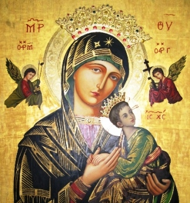
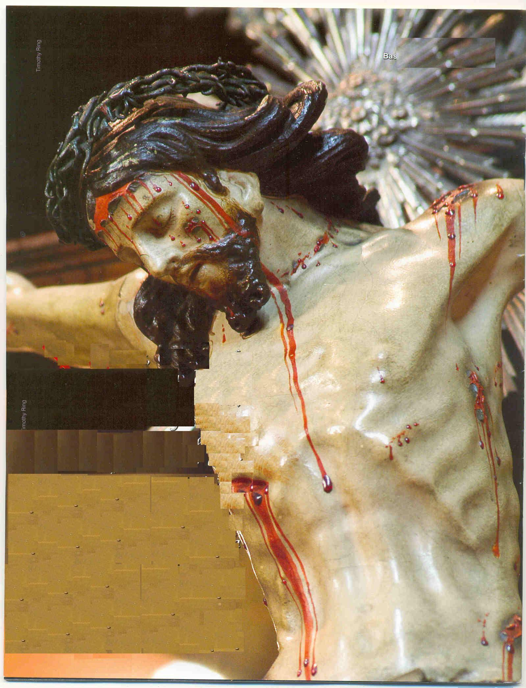

APRESENTAÇÃO

NOSSA SENHORA é nossa Mãe e como um bom filho, sempre devemos deixar nascer em nosso coração o desejo de conheça-la melhor e de agradá-la de algum modo. Foi assim, que nasceu e cresceu vigorosamente a vontade de saber como surgiu o nome de NOSSA SENHORA DO PERPÉTUO SOCORRO.

O Novo Testamento nos indicou o caminho exato. Nos últimos momentos de vida de NOSSO SENHOR JESUS CRISTO, pregado a Cruz no Gólgota em Jerusalém, num derradeiro esforço para manifestar a Sua Última e Eterna Vontade, o SENHOR colocou João Evangelista, o Discípulo que ELE mais amava, representando a humanidade de todas as gerações. Assim, as Sua Divinas palavras dirigidas a ele, devem ser acolhidas vigorosamente por cada um de nós, porque na verdade, esta foi a intenção DELE, deixar o seu testamento para todos os seus filhos. E por isso também, ao falar com sua MÃE: "Mulher, eis o Teu filho"! (Jo 19, 26) indicando João Evangelista que estava ao lado Dela, o SENHOR entregou a sua própria MÃE para ser a MÃE Espiritual da humanidade de todas as gerações, ali representada pelo seu Discípulo João Evangelista. E para confirmar o derradeiro e eterno desejo Divino, o SENHOR agora olhando para João Evangelista, que estava ao pé da Cruz junto a sua MÃE e de algumas Santas Mulheres, disse: "Eis a Tua Mãe"! (Jo 19, 27), mostrando-lhe a VIRGEM MARIA. Então, o SENHOR com a imensidão de seu Divino Amor, dava a todas as gerações um maravilhoso e incomensurável presente, entregando a ternura, o carinho, a bondade, o auxílio e a eficaz proteção, além do amor eterno e perpétuo de Sua Querida e Amada MÃE, para ser também a Mãe de cada um de nós, para nos ajudar em todas as necessidades, inspirar nossas decisões, proteger e orientar os nossos passos e toda a nossa vida perpetuamente, até o final de nossa caminhada existencial.
Por tudo isto, NOSSA MÃE SANTÍSSIMA, MÃE DE DEUS é também NOSSA SENHORA DO PERPÉTUO SOCORRO, a nossa querida e amada MÃE DO CÉU.
"ORAÇÃO"
NOSSA SENHORA DO PERPÉTUO SOCORRO, volvei a nós os Vossos olhos misericordiosos e nos socorrei em nossas necessidades. Sois a nossa bondosa Mãe e medianeira de todas as graças, refúgio dos pecadores, consolo dos aflitos e estrela guia de nossa existência. Coloco-me sob a Vossa poderosa e eficaz proteção e Vos suplico que obtenha de JESUS, Vosso tão querido e amado FILHO, a graça que necessito nesta hora de angústia e aflição (fazer o pedido).
Obrigado minha querida Mãe. - Rezar: Pai Nosso + Ave Maria + Gloria.
Ó MARIA, MÃE DO PERPÉTUO SOCORRO, rogai por nós que recorremos a Vós.
APOSTOLADO DOS SAGRADOS CORAÇÕES
http://www.apostoladosagradoscoracoes.com/